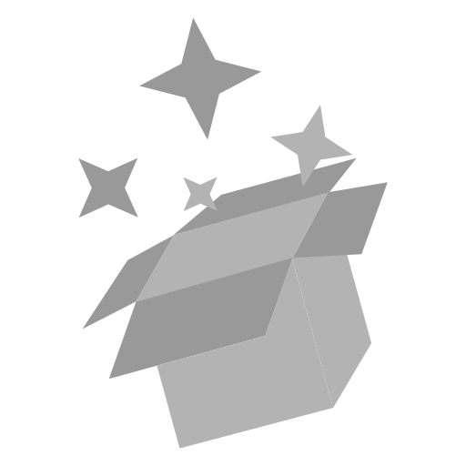

Recursos que comparto contigo

En este apartado te traigo varios recursos que puedes utilizar para tus proyectos.
- Documentación - Adjunto algunas de las documentaciones que he ido realizando a lo largo del tiempo, tal vez te sea útil.
- Fuentes de texto - Desde Ko-fi podrás comprar algunas de las fuentes que he ido creando, podrás usarlas para lo que quieras.
- Sonidos - Desde Free Sound podrás descargar todos los sonidos que he ido grabando.
- Modelos 3D - Subo modelos 3D a la web 3D export, algunos son gratuitos y otros de pago.
- Pack de texturas y patrones - Llevan un trabajo hacerlas, agradecería un pequeño donativo si las empleas. *Se incluye una pequeña aplicación para comprobar los patrones.